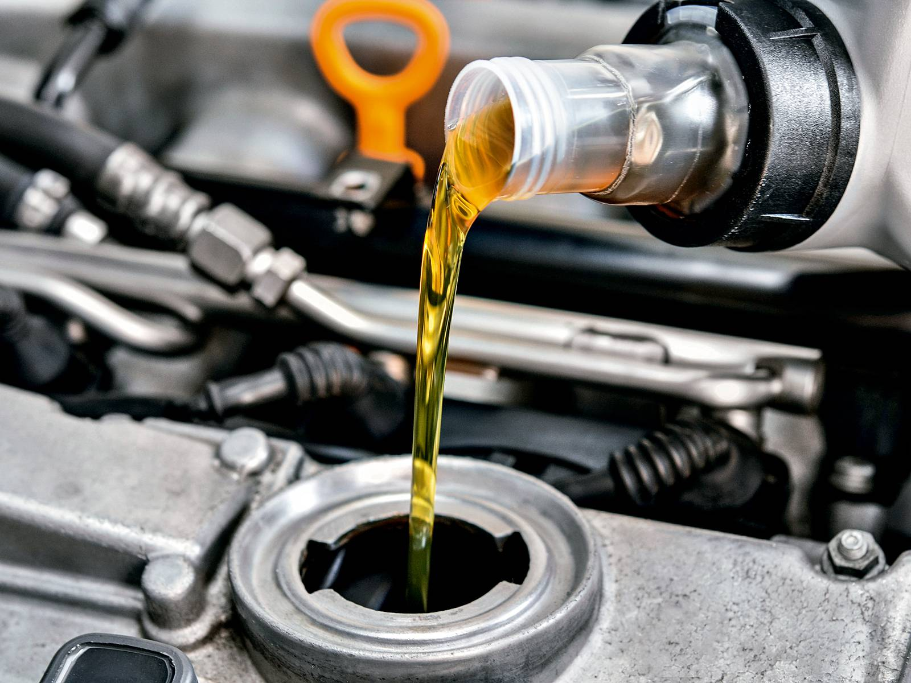

Mecânica especializada em geral

Serviço de desmontagem e montagem , retífica de motor completo, restauração da compressão indicada de funcionamento
Manutenções preventivas, periódicas e corretivas
Troca de óleo , velas , cabos , filtros. Análise visual de vazamentos e demais desgastes recorrentes de funcionamento.
Freios
Fazer um checkup periódico e evitar que algo possa apresentar problemas é necessário para garantir que um eventual defeito não se torne um problema ainda maior. A quantidade de componentes que fazem parte do sistema de freios é grande. Então, quanto mais cedo alguma falha for detectada, melhor.
Suspensões
Para oferecer maior segurança ao condutor do veículo e aos passageiros, o sistema de suspensão deve estar em boas condições. Por isso, identificar desgastes previne contra possíveis acidentes e aumenta a vida útil de outras peças ali compostas. Dessa forma, principalmente quando se compra um automóvel usado ou seminovo é importante fazer sua revisão. Assim, o motorista poderá rodar com tranquilidade, não gastar tanto dinheiro com manutenção futuramente e evitar transtornos.
Sistemas de arrefecimento
Se o seu carro tem motor a explosão, é fundamental que você conheça alguns cuidados básicos com este sistema para evitar problemas, gastos e dores de cabeça desnecessárias com seu carro na hora de levá-lo à oficina mecânica.
Limpeza de bicos
Eles são o centro nervoso da sua injeção eletrônica. É a peça final, que leva o combustível em volume ideal para dentro do motor e que trabalha com pulsos elétricos. A limpeza desobstrui e faz com que o fluxo seja reestabelecido.
Troca de óleo
Trocar o óleo com frequência é fundamental para o bom funcionamento de qualquer veículo, seja ele moto, carro ou caminhão. O óleo é responsável pela lubrificação e proteção das partes móveis, reduzindo o atrito e evitando o desgaste das peças do motor antes do tempo.
Além de prevenir o desgaste, o óleo também cumpre um papel importante de controlar o calor gerado pelo motor, sem que este passe para os demais sistemas. Com tantas funções, é fundamental que o motorista tenha total cuidado e faça a troca do óleo respeitando a frequência indicada. Evite gastos extras com a manutenção do seu veículo.